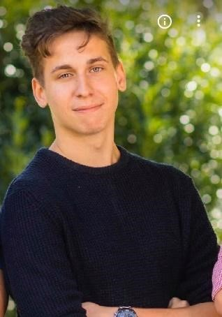

Bemutatkozás 
Bolyós Roland Márknak hívnak, és elsőéves gépészmérnök hallgató vagyok. Rajzolással már kiskorom óta foglalkozom hobbi, és néha versenyszinten. Rajzaimmal célom a hagyományos rajzoktól való eltérés, általános témák megközelítése a nem szokványos módon. Számomra a rajz kikapcsolódás, de próbálok valamilyen mélyebb értelemet minden rajzomba, munkámba belevinni.